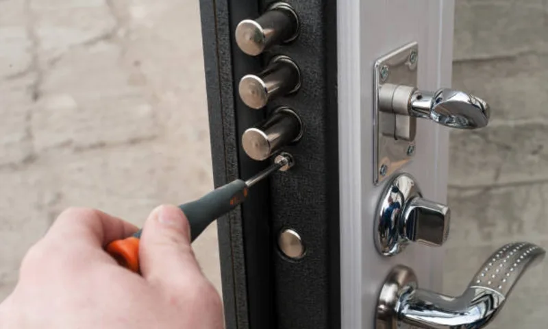

Потеря или кража ключей
Если ключи утеряны, доступ к квартире становится потенциально небезопасным. Оптимальное решение — заменить механизм в день обращения.
Выполняем замену дверных замков в квартирах, домах и офисах. Подбираем совместимый механизм под тип двери, согласовываем стоимость до начала работ и даем гарантию.

Если ключи утеряны, доступ к квартире становится потенциально небезопасным. Оптимальное решение — заменить механизм в день обращения.
После покупки или аренды жилья рекомендуется сразу менять замок, чтобы исключить доступ предыдущих владельцев и третьих лиц.
Если ключ проворачивается с усилием, ригели клинят или дверь плохо закрывается, лучше заменить замок до полной блокировки.
| Услуга | Работа | Механизм | Итого |
|---|---|---|---|
| Замена цилиндрового замка | от 700 ₽ | от 800 ₽ | от 1 500 ₽ |
| Замена сувальдного замка | от 1 000 ₽ | от 1 000 ₽ | от 2 000 ₽ |
| Замена замка после попытки взлома | от 1 500 ₽ | от 1 000 ₽ | от 2 500 ₽ |
Точная цена зависит от модели двери, состояния посадочного места и выбранного замка. Окончательную стоимость согласовываем до старта работ.
| Ситуация | Подходящая услуга | Куда перейти |
|---|---|---|
| Нужно заменить замок двери в квартире, доме или офисе | Замена дверных замков | Вы на нужной странице |
| Нужен именно сувальдный механизм | Замена сувальдного замка | Страница услуги |
| Нужен цилиндровый замок или замена личинки | Замена цилиндрового замка | Страница услуги |
| Проблема возникла поздно вечером или ночью | Ночная замена замка | Страница услуги |
| Есть следы вскрытия или деформация после взлома | Замена замка после взлома | Страница услуги |
| Корпус исправен, требуется заменить только цилиндр | Замена личинки/цилиндра | Страница услуги |
После работ фиксируем итог в заказ-наряде и выдаем гарантию на установку. Условия гарантии проговариваем до начала монтажа.
Стоимость включает диагностику, демонтаж, установку и проверку хода ригелей. Дополнительные работы обсуждаем заранее и не добавляем постфактум.
После монтажа мастер показывает корректное закрытие двери и объясняет, как продлить срок службы нового механизма.
| Зона | Примеры районов/локаций | Среднее время прибытия | Условия выезда |
|---|---|---|---|
| Санкт-Петербург | Невский, Приморский, Выборгский, Московский, Фрунзенский, Центральный, Калининский | от 30 мин | Ежедневно 08:00-22:00 |
| Юг и юго-запад СПб | Кировский, Красносельский, Пушкинский, Колпинский, Адмиралтейский | 30-45 мин | По загруженности дорог |
| Север и северо-запад СПб | Приморский, Выборгский, Петроградский, Василеостровский, Курортный | 30-45 мин | По согласованию с оператором |
| Ближайшие пригороды | Мурино, Кудрово, Шушары, Парголово, Сестрорецк | 45-60 мин | Возможна доплата за выезд за КАД |
| Ленинградская область | Всеволожский, Гатчинский, Тосненский и другие районы | от 60 мин | Уточняется при оформлении заявки |
Точное время прибытия зависит от адреса и дорожной ситуации. При звонке оператор сразу называет реалистичный интервал и подтверждает условия выезда.
 01
01
Ситуация: клиент потерял связку ключей и попросил срочно заменить замок в тот же день. Решение: установили новый цилиндровый механизм, проверили мягкость хода и выдали комплект ключей. Результат: дверь закрывается без усилия, доступ посторонних исключен.
02
Ситуация: после повреждения замка дверь начала клинить. Решение: усилили посадочное место, заменили механизм на более защищенную модель и настроили работу ригелей. Результат: восстановлена штатная работа замка и повышена защита входной группы.

03Ситуация: новая квартира, нужно быстро сменить замок без лишних переделок двери. Решение: подобрали совместимый замок под существующие размеры и выполнили установку за один выезд. Результат: безопасный доступ для новых жильцов и стабильная работа механизма.
Замена замка в Санкт-Петербурге требуется при износе механизма, потере ключей, переезде в новую квартиру или после попытки взлома. Если ключ проворачивается с усилием, заедает или дверь плохо закрывается — это признаки износа. Своевременная замена снижает риск заклинивания в неподходящий момент.
При замене замка мастер оценивает состояние двери, посадочного места и текущего механизма. После диагностики предлагает совместимые варианты по бюджету и классу защиты, объясняет разницу между моделями и согласовывает итоговую стоимость до начала работ.
Мы выполняем замену замков в квартирах, частных домах, офисах и коммерческих помещениях по всему Санкт-Петербургу. После установки мастер проверяет ход ключа, работу ригелей во всех режимах, выдаёт гарантийный талон и рекомендации по эксплуатации.
Оставьте телефон. Мастер перезвонит, уточнит задачу и согласует удобное время выезда.